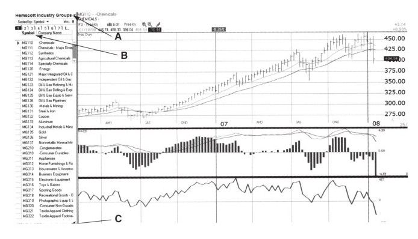
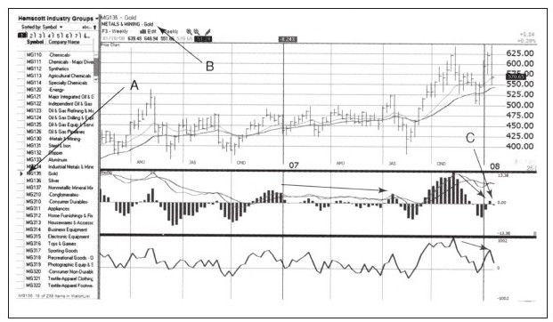
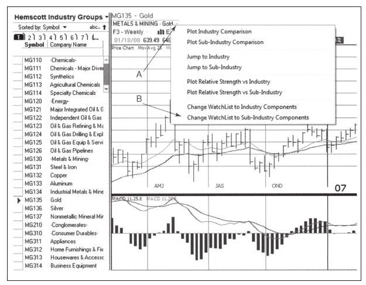
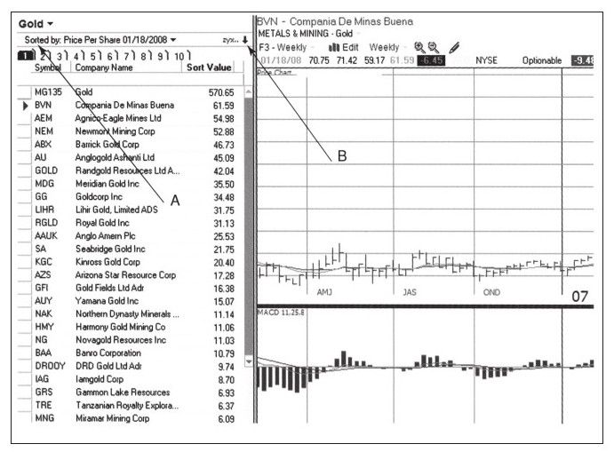
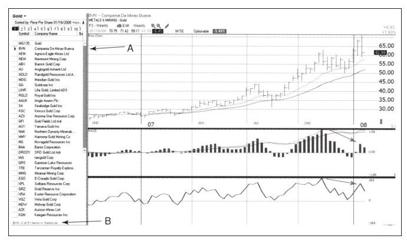

我主要使用两种方式来寻找可以做空的股票，一个简单另一个比较困难。当然，简单的方式也不是那么简单，主要是由Spike集团或者其他组织推荐的候选股票。我已经向他们描述了我的交易方法，他们就按照这种方法为我提供股票，然后我再使用我的系统进行分析并决定是否交易。我的交易系统，在本书开始的时候就已经介绍过了，要交易股票必须是用系统确认过的。有很多聪明人扫描市场，寻找交易机会，并把交易机会发给我，这其中也有不少好的交易机会。我用三重过滤网系统和组合系统确认是否应该交易这些股票以及该使用哪些参数。
困难的方法是翻遍整个股票市场寻找交易机会。我先分行业和子行业扫描，然后寻找那些看起来有做空机会的股票（见图7-24）。如果你喜欢在顶部做空，就找那些看起来高而不稳的行业；如果你喜欢在下跌趋势中做空，就找那些已经确立下行的行业。如果你找到了有做空潜力的行业或子行业，就把行业或子行业中的成分股找出来，逐一寻找具体的做空对象。
当看过上百个行业的股票后，你与市场的距离就非常近了。你会发现，在精挑细选的行业中分析个股的做法更有效率。我的一些朋友向我提供了自动筛选程序，但是我想亲自看看这些行业和子行业的价格走势。总体而言，我每个月做两次这样的工作。18

我喜欢使用TC2007[1]（www.TC2000.com）完成这项工作。程序把整个市场的股票分成239个行业及子行业，并且很容易从行业或子行业中找到对应的成分股。图7-24显示开始扫描，选择证券目录，选择“行业”，然后从分类列表框中选择"Symbol"。因为通常在周末做这项工作，所以我想看到包含我使用的技术指标模板的周K线图，这些指标包括两条移动平均线、MACD线、MACD柱和强力指标。当然你也可以在其他软件上做这项工作。
在今天的扫描中我发现了有吸引力的行业，即MG135-黄金行业（见图7-25）。周线图显示行业指数近期创出新高，但未能保持住而是跌回到下面的支撑位，留下向上的假突破，这是市场弱势的绝佳信号。MACD柱显示顶背离，这是另一个市场走弱的绝佳信号，然后在子行业中寻找可以做空的对象。

鼠标点两次进入子行业的成分股列表界面（见图7-26），我们从这里寻找做空对象。

首先，家庭作业要合乎程序。我们要对行业或子行业的成分股进行价格排序，而不是用其他的"Symbol"（见图7-27）。在寻找做空目标时，我首先想看到的是最贵的股票，当想买入股票时，我想先从最便宜的股票入手——低买、高卖（见图7-28）。

此时，我通常把软件切换到TradeStation（www.tradestation.com）。TC拥有强大的扫描功能，但TradeStation拥有更多的技术分析工具。再次强调，工作步骤的顺序比任何特定的软件都重要。我们刚刚讨论的查找过程可以让你监视整个股票市场，但是把目光转向缩小范围、寻找特定股票时需要大量的时间。

[1]图7-24至图7-28就是我用TC2007（Copyright 1997-2007，Worden Brothers,Inc,All rights reserved）画的。